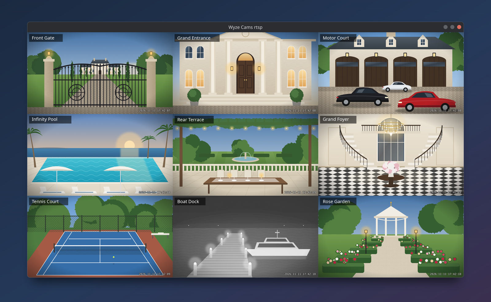
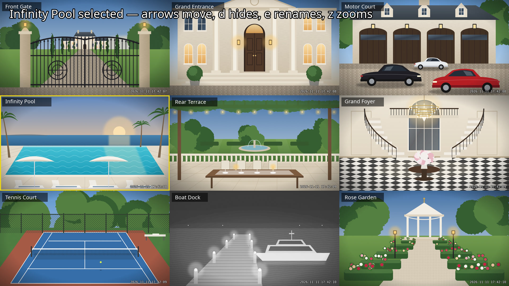
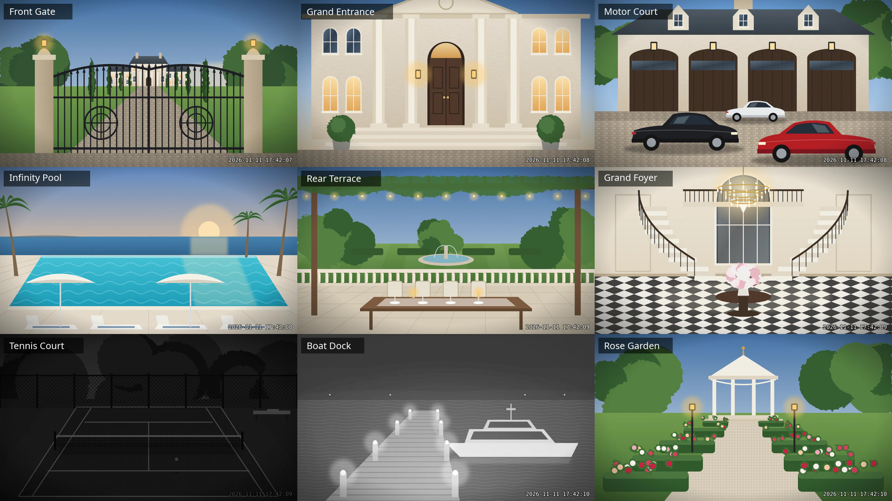
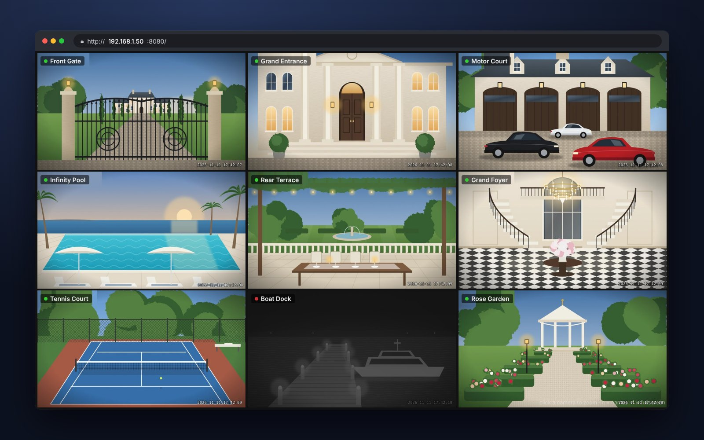
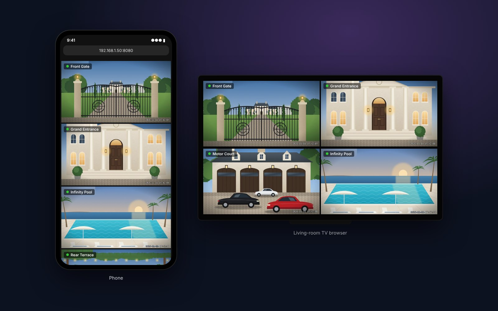
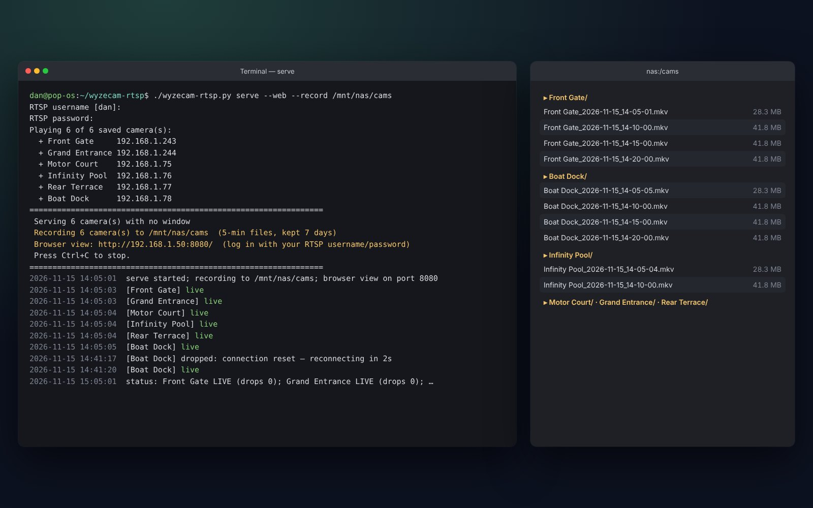
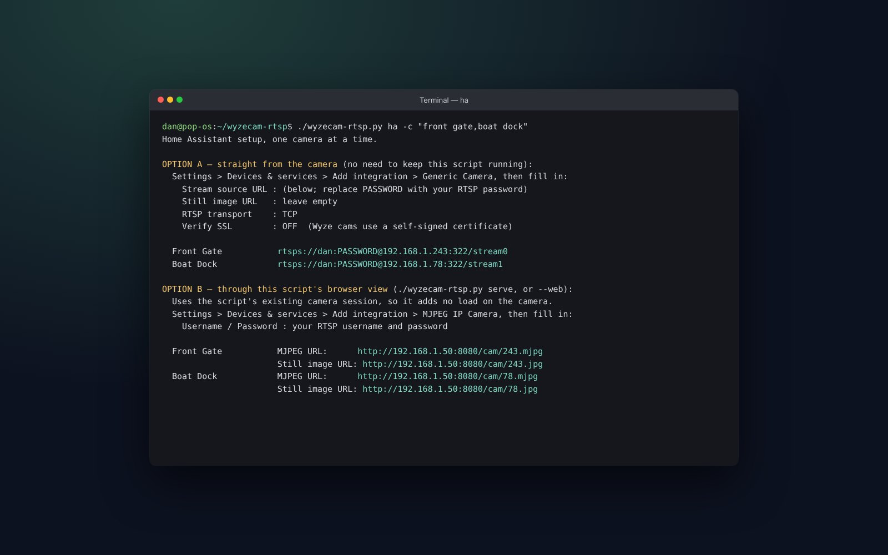
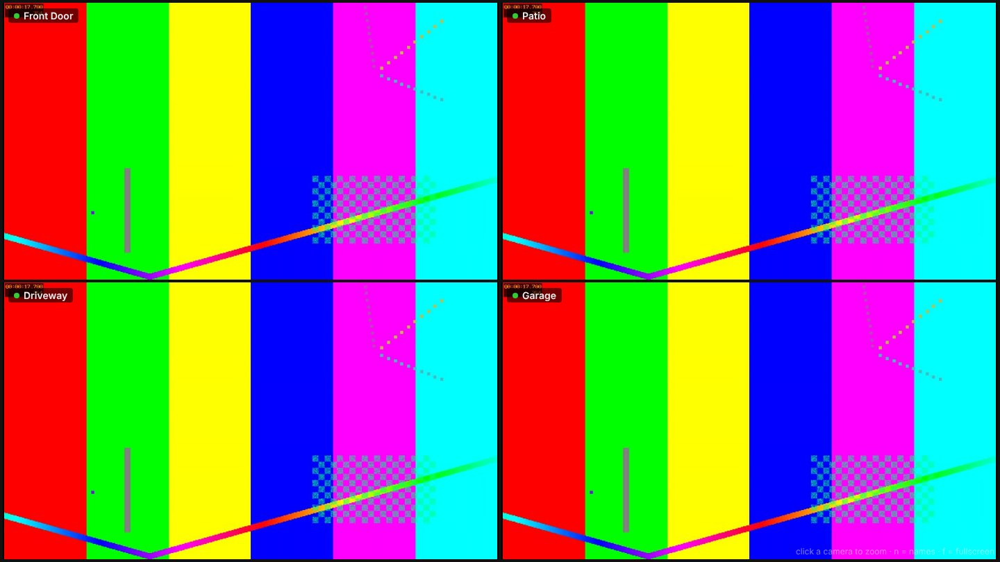

wyzecam-rtsp finds your Wyze cameras on your network, shows them all in one live grid, records them to your NAS, streams them to any browser and plugs them into Home Assistant. It's one Python file with no subscription and no Wyze app, and it runs on Linux, macOS and Windows.

Nine cameras live in one window. (Illustrated mockup: the scenes are drawings, but the layout matches the app.)
The Wyze app shows one camera at a time on a phone. This puts every camera on your monitor or TV in one window, and keeps them all live.
Scans your network for cameras with RTSP turned on, names them, and remembers them.
Press 1–9 to pick a camera, then use the arrow keys to move it. z zooms, e renames, s saves the layout.
Each camera has its own reconnect loop, so one flaky Wi-Fi camera never freezes the others. Unstable cameras switch to their substream on their own.
Decodes on the GPU where it can: VA-API on Linux, VideoToolbox on macOS, D3D11 on Windows.
Saves clock-aligned files in one folder per camera, deletes old ones automatically, and barely uses any CPU.
Watch every camera from any phone, laptop or TV browser on your home network, behind a password.
One command prints exactly what to type into Home Assistant for each camera.
serve runs with no window: recording and the browser view on a NAS, Pi, mini-PC or container.
Select a camera, move it with the arrow keys and save. Hide the cameras you don't need, and rename them without leaving the grid.
cameras.json
Illustrated mockup
A camera without live video turns dark grey and reconnects by itself. Cameras are also refreshed on a staggered schedule, so none of them drifts behind live.

Illustrated mockup: Tennis Court is reconnecting
The three most-requested Wyze features are a browser view, NAS recording and Home Assistant. They all run from the connection the grid already has open, so the cameras don't get any extra load.
Open http://your-pc:8080 on a laptop, phone or the browser on your TV and log in with your RTSP username and password. You get a live grid: click a camera to zoom, press f for fullscreen.
./wyzecam-rtsp.py --web

Illustrated mockup, styled with the page's real stylesheet. Boat Dock is offline.
The same page works on any screen size. Phones get a scrolling list; TVs and desktops get the full grid.
./wyzecam-rtsp.py serve -c "front gate,grand entrance,motor court,infinity pool"

Illustrated mockup
Point it at a mounted NAS share and every camera records into its own folder. Files are cut on the clock (every 5 minutes by default), so finding 2:15 pm takes one look.
.mkv, or --rec-format mp4 for files that play in any browser or phone--keep 7)./wyzecam-rtsp.py serve --web --record /mnt/nas/cams

Illustrated mockup. The terminal text follows the real output format.
ha prints exactly what to type into Home Assistant for each camera. It needs no login and never prints your password.
./wyzecam-rtsp.py ha

Illustrated mockup of the real command output
This is an unedited capture of the real browser view, serving four simulated cameras with test-pattern video. The login, live updates and per-camera status dots are all working.

Real capture: four simulated cameras with test patterns
The grid is used daily on real cameras. The new features were built and tested against simulated camera streams and haven't been run on a real Wyze cam yet. If you try them, please open an issue and say how it went.
Linux (Pop!_OS), Cam v3, Cam Pan v3, Cam v4 RTSP firmware
Tested here with simulated camera streams
serve with no window, reconnects includedha output, including on WindowsOn real hardware, before calling it done
--record / --web (mpv was simulated)Turn on RTSP for each camera in the Wyze app (camera → Settings → Advanced Settings → RTSP) and set a username and password. Then:
# 1. install the two helpers (Linux shown; macOS: brew, Windows: winget) $ sudo apt install python3 ffmpeg mpv # 2. scan your network and open the grid $ ./wyzecam-rtsp.py --scan # 3. go further $ ./wyzecam-rtsp.py --web --record /mnt/nas/cams # grid + browser + recording $ ./wyzecam-rtsp.py serve --web --record /mnt/nas/cams # same, no window $ ./wyzecam-rtsp.py ha # Home Assistant setup
No. Video goes straight from each camera to your computer over your home network, and the tool needs no internet connection.
Yes. Alerts, event clips and settings keep working. On weak Wi-Fi, opening live view on your phone may briefly drop that camera's tile, and the grid reconnects it.
Wyze cameras whose firmware offers RTSP: tested on Cam v3, Cam Pan v3 and Cam v4 (RTSP firmware). Other RTSP cameras may need a different port or path.
It's plain HTTP behind your RTSP password, made for your home network. Don't forward it to the internet; use --web-bind 127.0.0.1 to allow only this computer.
Free, open source and in one file. Star it, try it, and open an issue saying how it ran on your cameras.